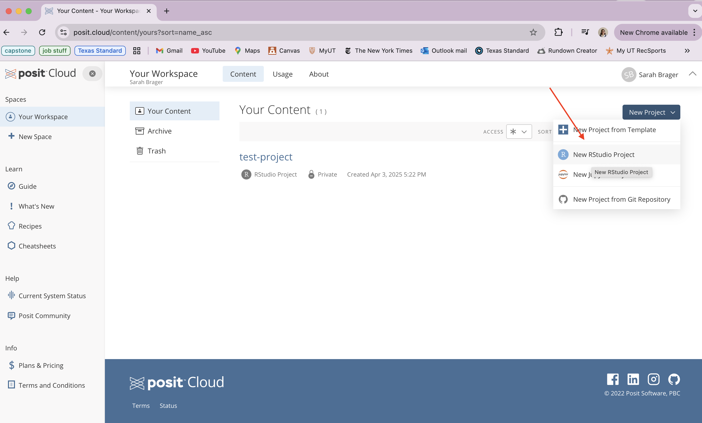
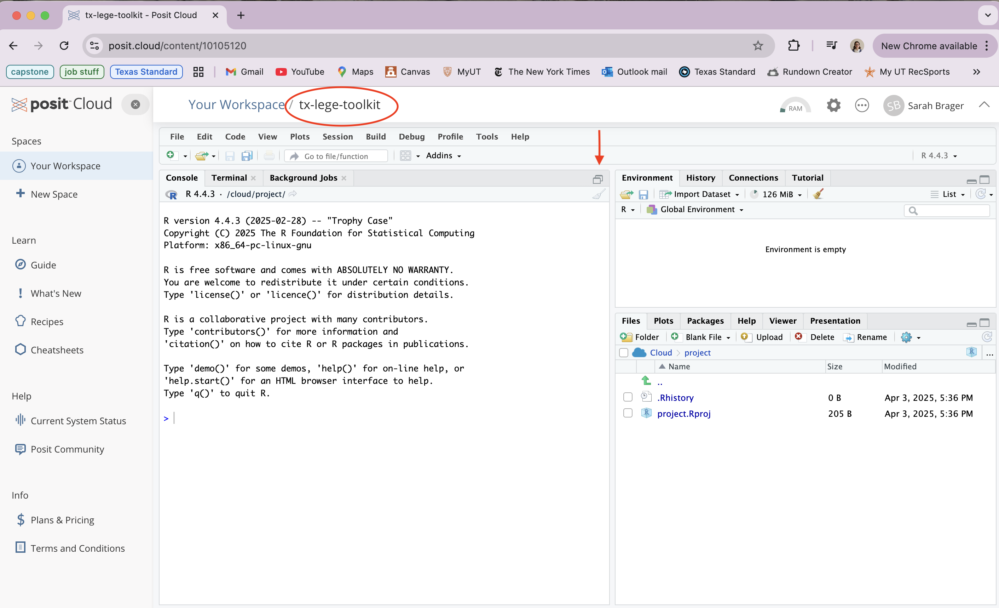
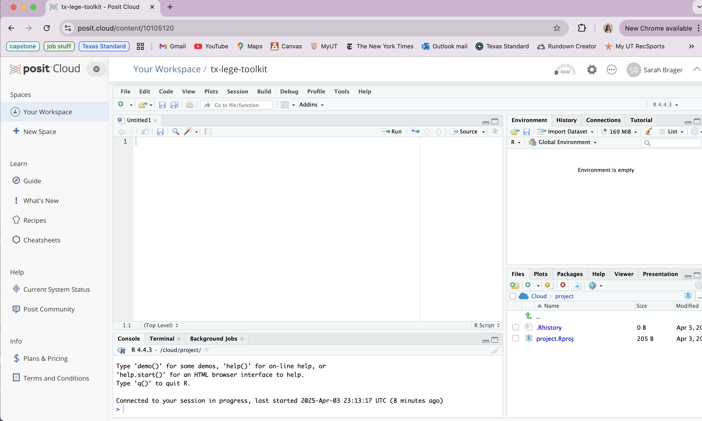
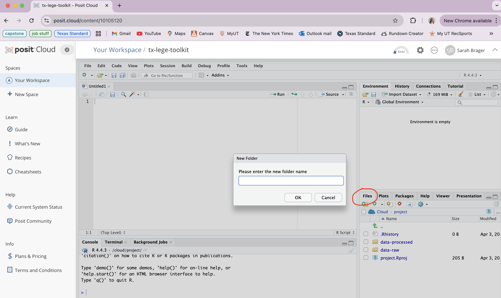
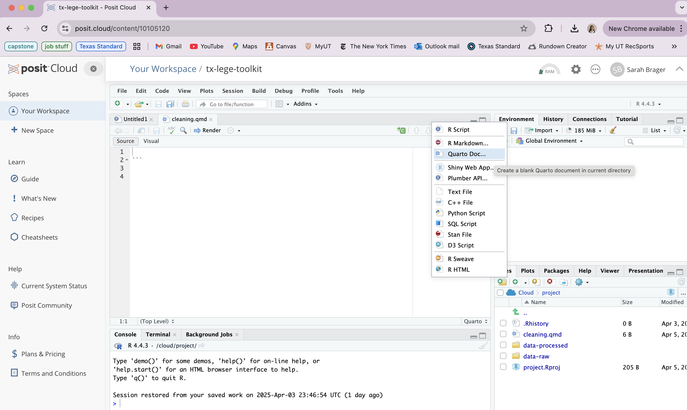

Getting Started with R
Video tutorial on setting up workspace in posit.cloud.
What is R?
This tutorial will introduce you to basic data analysis that can be done in R, which is one of many programming languages used by data journalists to better understand large, complex data sets. While this toolkit will show you some of R’s capabilities, it is by no means a complete look at how R can be used. If you like the activities in this toolkit, I highly recommend you check out the additional resources provided on this website.
Do I need coding experience to use this toolkit?
Nope! An interest in stats is helpful, but this tutorial is designed for people who are new to data analysis and want an example of how news reporters can use data in their work. It may take a minute to adjust to the interface and style of R, but this lesson keeps things simple and user-friendly.
Additional resources
If you decide after this tutorial that you want to learn more R programming skills, check out these free R courses on Code Academy. We’ll go over some of those skills in this toolkit, but not all of them. If you want to build on what you’ll learn today, check out the Code Academy library (you can earn certifications for your resume!)
First steps
1. Go to posit.cloud and create an account
This is an online version of R, meaning you’ll be able to work with the same interface as the R desktop application but in your web browser. If you already R Studio installed on your computer or would prefer to use the desktop version, that will also work for this toolkit. The instructions will work either way. If you plan on pursuing future data projects beyond this tutorial, I do recommend installing R Studio because you will eventually hit a paywall in posit.cloud.
Installing R Studio (optional)
tktk instructions for that
If you want to keep things simple, though, posit.cloud will do just fine! If you decide you want to install R Studio in the future, you can always come back to these instructions.
2. Create a new project within posit.cloud
Once you’re logged in to your account, you should see a dashboard that lists all of your content (this is empty at the moment, of course). In the top right corner, click on the drop down button the create a new project and select “New RStudio Project.” All of the work you’ll do for this toolkit will be within this project, so if you leave and come back to these instructions make sure to re-enter the same project through your dashboard.

If you’re working in the desktop version of RStudio, create a new project by selecting File —> New Project —>
3. Name your project/familiarize yourself with the interface
Now that you’re inside the project, immediately give it a name at the top of the workspace. I recommend something short and related to the data we’ll be working with, like “tx-lege-toolkit”

Now you can see what the RStudio workspace looks like! It can be a a lot to take in at first, but you’ll adjust to the layout once you start creating files and working in them. Click on the boxes shown in the photo above the collapse the console, creating a fourth window where your files will eventually appear.
These are the 4 main windows within any R project: file workspace (top left), console/terminal (bottom left), environment (top right), and file list (bottom right). You can adjust the size of each window by hovering your cursor between them.

4. Adding to your library
First, folders
Before we download the data, let’s create two folders where you’ll drop the files. This is a good practice for keeping your files organized in any R project you work in. In your files window (bottom right), click the icon in the top left corner to create and name a new folder. Title the first one “data-raw” and then create a second folder called “data-processed”

Once you’ve created those, you’ll see them appear in your files list. The data-raw folder is where you’ll eventually put the unedited dataset that we’re going to download in the next step. Any data that you clean up/edit should be stored in the data-processed folder. It’s always good to keep a copy of the original data separate from the version that we’re going to edit and analyze, hence the two folders. Keep this in mind for any future data projects you decide to pursue!
Now, the Quarto files
We’re also going to create two files inside which we’ll run code to analyze the data. Click the new file icon and select “Quarto Document.” Name one “cleaning.qmd” and then create another and call it “analysis.qmd.” Both of those should appear in your files list. We’ll come back to these later on in the tutorial.

Recap
In this section, you learned how to create a new project in posit.cloud and R Studio and add files within that project. You should have two folders, data-raw and data-processed, and two files, one for cleaning and one for analysis.
Now that you’ve set up your project, you’re ready to start working with the data! Feel free to return to these setup instructions for any other project you decide to create in posit.cloud or the R Studio app.
In the next section, we’re going to download the dataset of bills from the Texas Legislative session and add that data to your R project.